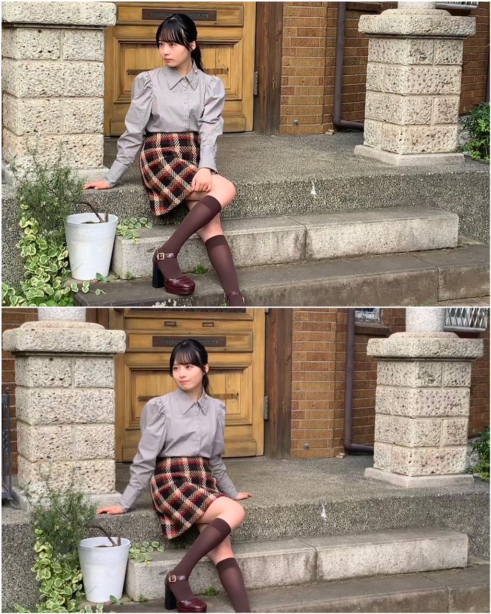
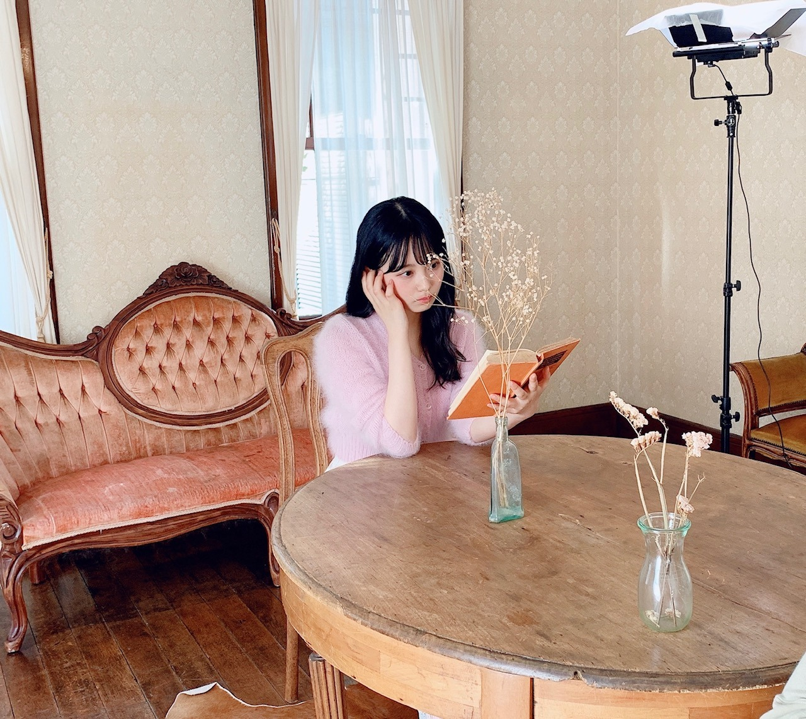
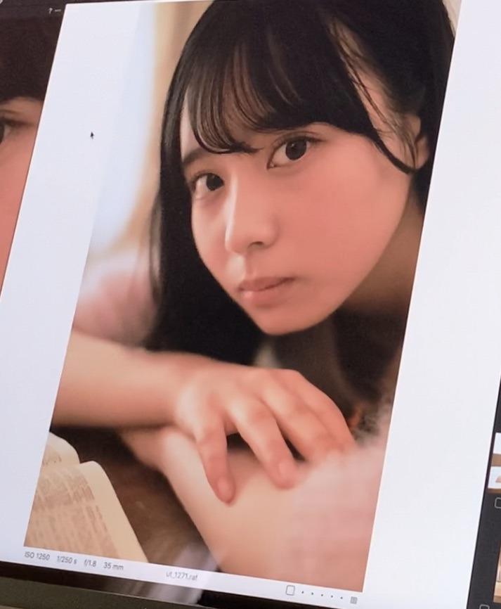
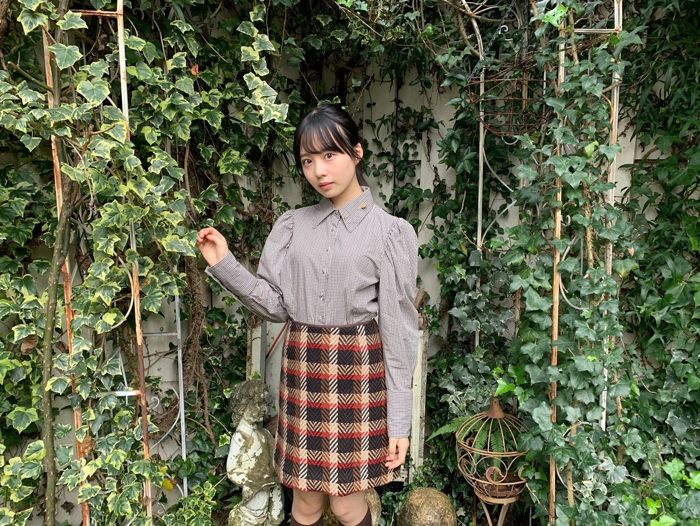
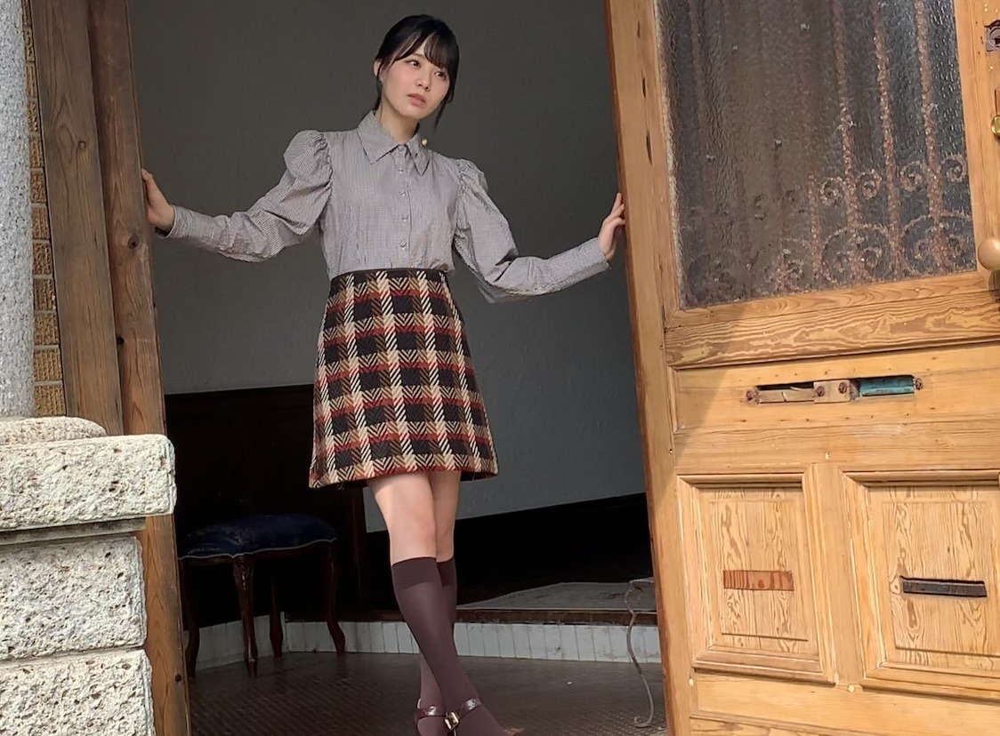

2020/1124Tue思考能力。佐藤璃果
こんにちは~
乃木坂46 (新)4期生 岩手県出身
佐藤璃果です。

秋色のお洋服がとても可愛いです。


ピンクのモコモコのお洋服を着ております。
11月21日発売
アップトゥボーイVol.297さんのオフショットです。
お家が素敵で、家具も素敵で、
こんなお家に住みたい！と思いました。
岩手県出身の方が2人もいらっしゃって
とても嬉しかったです︎︎☺︎
色んな岩手トークを楽しみました。

これは堀未央奈さんの写真集に出てくる
所に似ている〜！と盛り上がっていたら
マネージャーさんが撮るよ！！と言ってくださた写真です。
あのポストカードにもなっているところです！
わかりますか？
でも後で見返したら、もっとゲート？の部分が白かったですね(--;)
そして、少し前の堀さんの755で
私の話題が出ていて、それに堀さんも反応してくださっていて嬉しかったです。
書いて下さった方、それに反応して下さった堀さんありがとうございます( ¨̮ )
❁
坂道研修生ツアーを見た日から、
私たちがグループに配属された際には
全員、載せたいと思っていたんだよ
というお言葉を頂いて、
それがとてもとても嬉しく、感動しました。
発売中です。
よろしくお願いします。
~~~質問~~~
○ ストーブとエアコンと炬燵どれ派ですか
夢は暖炉で、
実家ではストーブと炬燵
現在エアコンです。
○冬の防寒は最大でどのくらいまでする？
ヒートテックなど三、四枚着込みます！
○今年中3の受験生で推薦受けるんだけど面接とか苦手で...だから応援してほしいです( .. )
目の前の人をかぼちゃと思いましょ！笑
あと、答えを丸暗記しすぎると予想してなかった質問が来ると焦ってしまうので、
普通の会話、ぐらいの気持ちでいるのもいいかも知れません...
私は焦るタイプでした(--;)
○ イルミネーションといえば、神戸のルミナリエは見に行ったことありますか？
わからないです、、
素敵なんですか？？調べてみますっ
○ 水族館で好きな生き物はなんですか？
イルカ、アシカさん
○ 璃果ちゃんはゼッケン後ろ前反対に着たことありますか？？
沢山あります！
ちなみに洋服は裏表逆もあります！
○ 自販機でつい買ってしまうものってありますか？
お水です！
○ 岩手県では「おばんです」や「したっけ」って言いますか？
もしくはだれがか使ってるのを聞いたことはありますか？
おばんですは、よくテレビで流れていたし、おばあちゃんも使っていた気がします
したっけはよく使いますよ~
したっけさー、なんとかでさーって
○ 今年新しく買ったアウターとかありますか？
迷って何も買えていません...
○ 好きなクリスマスソング教えてください☆
クリスマスソング！
○ 岩手県民はよくお餅を食べるとのこと。
璃果ちゃんもよく食べてた？
すんごく食べていました。
11月20日、掛橋沙耶香ちゃん
❁お誕生日おめでとう❁
不思議な子だなぁと思うことが多いのですが、色々絡んでくれることがとても嬉しいです！声も可愛くて、ギターも上手で、
物怖じせずに堂々としている
さやかちゃん尊敬︎︎︎︎︎☺︎
さやか！！
すごい一生懸命褒めようとしてくれたことが印象深いです！！
天真爛漫さ素敵です。
これからも絡みに来てください
どんとこいやっ
~~~~~~~~~~~~~~~~~~~
明日はるなぴです。
一緒に乗り越えよう2。
~~~~~~~~~~~~~~~~~~
皆さんにとって
素敵な1日になりますように。

扉も素敵でした。
またね。
好きなスイーツはなんですか？
オフショット祭りになりました。
もっと良いものを作っていけるように日々
考え行動していきたいです。
いつもありがとうございます。
#43 りか

PROFILE
新4期生リレー
202104
| SUN | MON | TUE | WED | THU | FRI | SAT |
|---|---|---|---|---|---|---|
| 1 | 2 | 3 | ||||
| 4 | 5 | 6 | 7 | 8 | 9 | 10 |
| 11 | 12 | 13 | 14 | 15 | 16 | 17 |
| 18 | 19 | 20 | 21 | 22 | 23 | 24 |
| 25 | 26 | 27 | 28 | 29 | 30 | |

コメント(268)
明日はブログ更新日だね！
楽しみだなぁ。
この前、宮城でやっとノギスキのりかちゃんナース回になったよ〜
本当かわいかった♡
りかちゃんナースがいたらきっと病院も緊張しないんだろうなぁ。
質問
◯最近お菓子作りはしましたか？
岩手のおとなり宮城から応援してます☺︎
れな
昨日の LINELIVE 観たよ～
しーちゃんとのトーク ２人とも可愛いかったし、観てる方も楽しかった。さらに仲良くなれてよかったね(^^)d
期待どおり、しーちゃんがりっかちゃんの魅力を沢山引き出してくれたなって思った(^.^)
だって、僕の心の中で、りかちゃんの存在が確実に大きくなって、もっと応援しよう！って思ってるから
今日も４期生ライブの準備かな？ 頑張って(^-^)/
2周連続でコメントするの遅くなっちゃって
ごめんね（ ; ; ）
後の方のコメント読んでくれるか
わからないけどどうだろう…( ᵒ̴̶̷᷄꒳ᵒ̴̶̷᷅ )
読んでくれてたら嬉しいな…泣
┈┈┈┈┈┈┈ ❁ ❁ ❁ ┈┈┈┈┈┈┈┈
1枚目の写真パッと見ロングブーツかと思ったら
靴と同じ色の靴下履いてるんだね~！！
めちゃめちゃこの洋服の組み合わせ可愛い⸜❤︎⸝
こういう可愛い系の服似合うの羨ましいな~
┈┈┈┈┈┈┈ ❁ ❁ ❁ ┈┈┈┈┈┈┈┈
今回のブログ、未央奈のこと書いてるなって
思ってたけどそういう伏線だったのかな…？
びっくりしたなぁ
選抜発表の日に卒業を知らされたらしいけど
きっとみんなびっくりしたよね…
本当にまさかすぎた、、！！！
璃果ちゃんにとって未央奈は
どういう先輩だったかな？？？
何か思い出とかある？？？
ぜひあったら聞かせてほしいな☺︎
┈┈┈┈┈┈┈ ❁ ❁ ❁ ┈┈┈┈┈┈┈┈
【質問】
・クリスマスは毎年何して過ごしてる？？私クリぼっちだから璃果ちゃんと過ごしたいな~なんて(*ˊˋ*)
・4期生ライブもうすぐだね！璃果ちゃん的注目ポイントとかある？？
・璃果ちゃんの嫌いな食べ物は？？
コメント遅くなっちゃったけど
読んでくれてたらとっても嬉しい( ᵒ̴̶̷᷄꒳ᵒ̴̶̷᷅ )♡
またブログ更新待ってるね~❀·°
*⑅୨୧まなみん୨୧⑅*
アップトゥボーイさんのオフショットがたくさん！！！！！
どれも可愛くて…なんでオフショット〜！って思ってしまうものばかりです。誌面も見ました！本当に可愛い。
今までのグラビアの中で1番甘々だった気がします。
とっっっても似合ってました！
岩手県出身の方が2人もいたのは本当に凄い！
アップトゥボーイさんが岩手県出身の方を選んでくださったのかな？素敵。
坂道研修生ツアーから1年が経った今、そういう話を聞けたこと、とても嬉しく思います。
-------❁ ❁ ❁-------
好きなスイーツはセブンイレブンさんの生食感スイートポテト大福です！本当に美味しい♡
新商品チェックするのが趣味のりかちゃんはもう食べてるかな？(笑)
食べてなかったらぜひ食べてみて〜！
-------❁ ❁ ❁-------
乃木坂上り坂見ました！
久保史緒里さんとのLINEライブりかちゃん可愛かった〜！
久保さんも可愛かった〜！！
"しおりか"東北出身者同士でこれからたくさんお仕事できるといいですね！もちろん、鈴木絢音さん含めた東北姉妹にも期待しております！！！
りかちゃん！しおちゃんってちゃんと呼べそうですか？♡(笑)
"りっか"って呼ばれた時のりかちゃんの反応がヲタクすぎてにこにこしちゃいました♪
共通点が沢山あると話していたので、なんなのか気になります！
何度も見返してますよ〜^^*
明日はりかちゃんのブログ更新日！
楽しみ((* ॑꒳ ॑* ))
明日もりかちゃんにとって素敵な一日になりますように♪
またね❁⃘*.ﾟ
｢しおちゃんとりっか｣今回でかなり仲が深まったんじゃないでしょうか？｢りっか｣とあだ名で呼ばれて照れながら喜んでいる璃果ちゃんが純粋で愛おしかったよ( ˊᵕˋ )
急には難しいかもしれないけど、これを機会にいつかは｢まゆたん、しおちゃん｣のようにお互いタメ口で話せるくらい仲良しになれるといいね(*´︶`*)
4期生ライブの配信チケット購入したよ〜！！！
今からとてもとても楽しみにしてます
初の4期生16人でのライブ！
新4期生にとっては乃木坂になって初の本格的なライブ！
4期生ライブ初の配信ライブ！
初めてづくしなことが盛り沢山ですが、だからこそファンとしても新しい試みに今からドキドキワクワクしてます
璃果ちゃんのダンスについても、これまでTIFや白石麻衣ちゃんの卒業ライブで観る機会はあったけど、本格的に観るのは今回が初めてになるので、ものすごく楽しみにしてる( ･ᴗ･ )
当日は最初から最後まで一時も目を逸らすことなく画面に張り付きたいと思います！(笑) おやすみなさい〜
アップトゥボーイさんのオフショット祭り！
今回も素敵なオフショットどうもありがとう♪
チェックの秋色のお洋服とっても似合いすぎていて可愛らしくて最初のページから心射抜かれてしまいました！
毎回どのグラビアも素敵だけど今回は特に璃果さんの雰囲気にあっていて一段と素敵だなと思いました♪
あまりの素敵さと可愛さに購入してから何回も見ていますが見る度に感嘆のため息がもれてしまいます。
久保史緒里さんとのLINE LIVEも観ましたよ〜！
しおりかコンビ！最高でした！
とても幸せなとにかく癒される1時間でした〜♪
次のしおりかコンビが楽しみです♪
好きなスイーツは豆大福が好きです！
ちょっと渋いチョイスかもしれませんが、いつからか忘れるくらい前から気づいたら好きでした笑
お餅は柔らかすぎず餡は粒あんが好きです。
璃果さんは、こしあんと粒あんどちらが好きですか？
璃果さんがいつも笑顔溢れる日々を過ごせますように！
またね！
質問です
◯出演してみたいラジオ番組はありますか？(メンバーがレギュラーでない番組でもOKです。)
おはよう
ブログありがとー！
ほんとにステキな衣装！！
りかりんはこういったコーデは
最上級に似合うぜ！！
感動です^ ^
次回のグラビアも楽しみです！！(o^^o)
LINELIVE
ほんとにおもしろかった！
結構トークが面白いりかりんに
ハッと新鮮な想いを馳せたり
しーちゃんとの褒めちぎり合いが微笑ましかったり^ ^
ステキな時間でした！
４期ライブでもりかりんのパフォーマンスを
大いに期待しています^ ^
あー、たのしみやんかいさ！！(o^^o)
みーぐりもいつかの開催を待ち望むばかりです＾＾
ではでは
今週もはりきってまいりましょーー！！
ヽ(´▽｀)/
コメントする